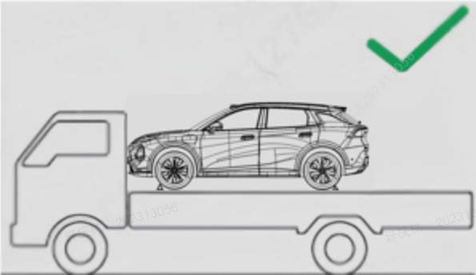

Изображения моделей автомобилей в этом разделе приведены только для иллюстрации операций, пожалуйста, ориентируйтесь на фактическую модель автомобиля.

Перевести автомобиль в режим "P", нажать педаль тормоза, на центральном дисплее нажать виртуальную кнопку «Центр автомобиля → Безопасность и обслуживание → Специальный режим», после нажатия кнопки подтверждения во всплывающем окне автомобиль перейдет в режим буксировки.
Не буксировать автомобиль с поднятым задним мостом, иначе рулевое управление будет уводить. Не буксировать автомобиль назад, если передние колеса касаются земли, иначе это приведет к повреждению автомобиля.
После включения режима буксировки передача автомобиля изменится с положения P на положение N, электрический стояночный тормоз будет отпущен; во избежание скатывания автомобиля включайте режим буксировки на ровной поверхности без крутых уклонов.
После включения режима буксировки автомобиль остается разблокированным; блокируйте автомобиль только после выхода из режима буксировки.
Буксировку на небольшие расстояния на низкой скорости разрешается проводить только на дорогах с твердым покрытием, при этом необходимо провести проверку безопасности автомобиля, чтобы убедиться, что система привода, высоковольтная система, колеса, мосты, трансмиссия, рулевое колесо и тормоза находятся в исправном состоянии.
Буксирующий автомобиль не должен быть легче буксируемого автомобиля, иначе возможна потеря контроля над автомобилем.
Проверить и убедиться, что стальной трос, цепь и проушины, используемые для буксировки, не порваны и не повреждены.
Стальный трос или цепь для буксировки надежно закреплены на проушине.
Не дергать за проушину резко, следует прикладывать стабильное и равномерное усилие.
Перед буксировкой убедиться, что буксируемый автомобиль находится в положении N и в пригодном для движения состоянии, а также включить аварийную световую сигнализацию.
Длина буксировочного троса должна быть менее 5 m (16 ft), к нему должна быть привязана заметная тканевая лента для идентификации.
Управлять автомобилем осторожно, избегать провисания буксировочного троса во время буксировки.
Водители обоих автомобилей должны часто обмениваться информацией.
При движении на длинных спусках тормоза могут перегреться, что приведет к снижению эффективности торможения, поэтому следует часто останавливаться для охлаждения тормозов.
Расстояние буксировки не должно превышать 25 km, скорость движения при буксировке не должна превышать 40 km/h (25 mph).